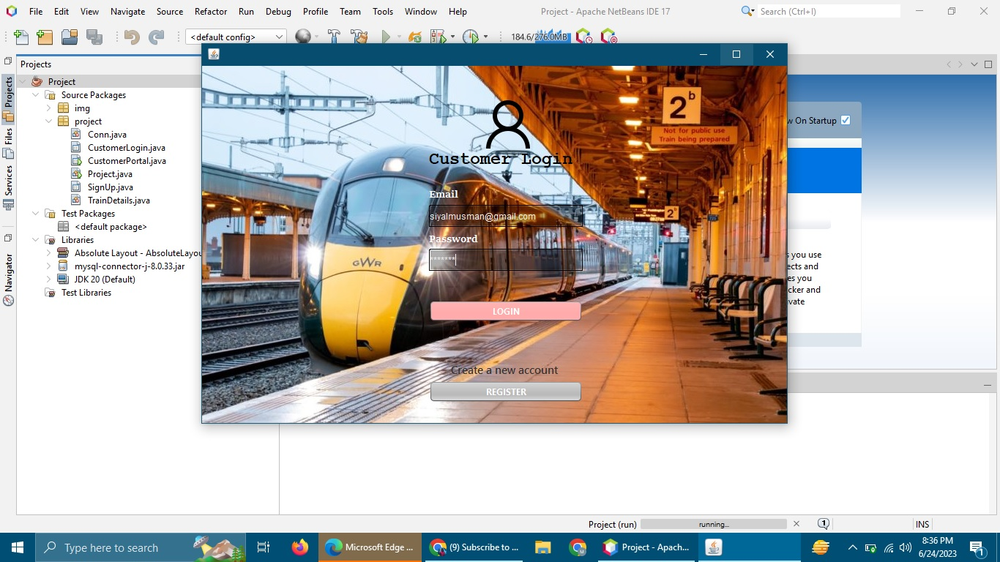

Bio Data
Name: Muhammad Usman City: Mirpur Mathelo Email: siyalmusman@gmail.com Institute: Sukkur IBA University Qualifications: Persuing Bachelor's Degree
I’m Muhammad Usman from Mirpur Mathelo, currently pursuing a Bachelor's Degree at Sukkur IBA University. My academic journey here has been both enriching and challenging, providing me with a solid foundation in JAVA, CPP, Assembly Language, SQL. At Sukkur IBA University, I am deeply involved in my studies and engaged in various campus activities that enhance my learning experience. I am particularly interested in Java GUI and dBase. This university’s rigorous curriculum and supportive environment are shaping my skills and preparing me for future professional challenges. Feel free to reach out to me at siyalmusman@gmail.com for any academic discussions or opportunities for collaboration. I am eager to connect with others who share similar interests and goals. Thank you for your time!
Skills
- Java
- C++
- SQL
- Assembly Langauge
- Java GUI
- Data Structures
Projects
- Invetory Management System using Java & dBase
- Voting System using Data Structures
- Ticket Booking System using Java GUI & dBase
- Hospital Management System usign C++
Certificates
-
NFTP Wordpress Developer
